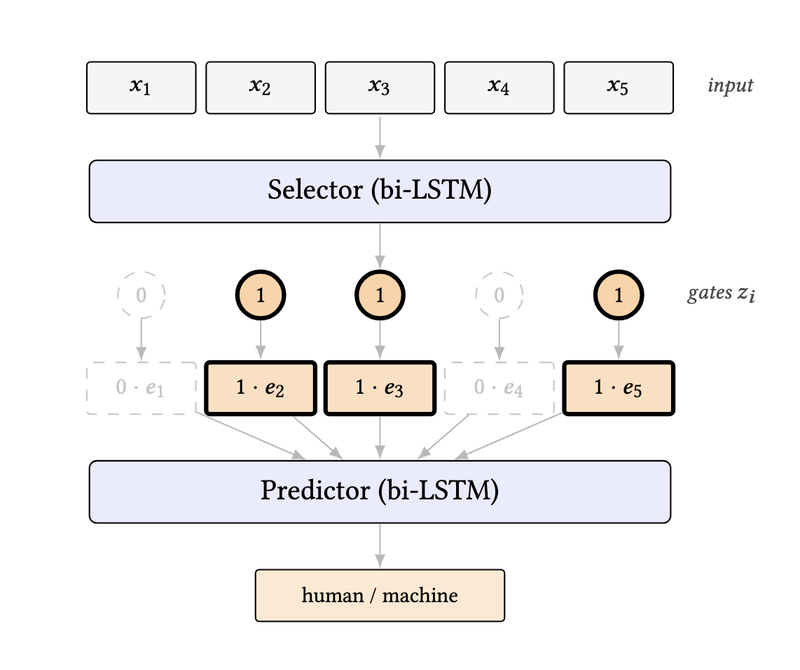
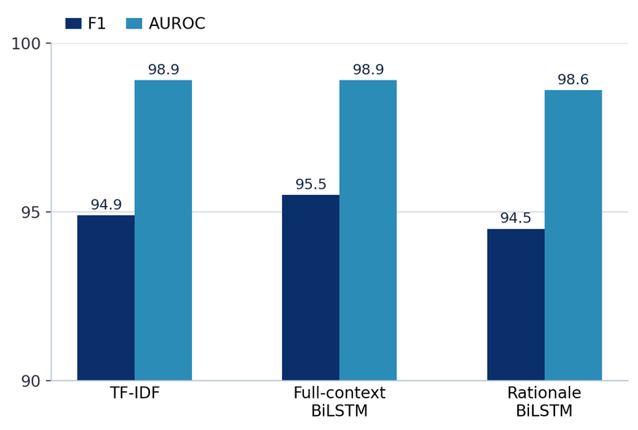
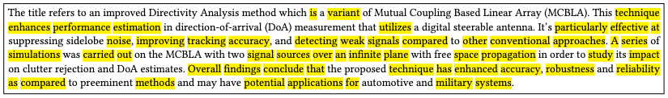

Aim
Can a rationale-based classifier retain detection performance relative to a matched full-context classifier while exposing evidence that matters to its prediction, and does showing that evidence help human evaluators judge authorship?
Method
The study uses 8,160 balanced English passages, with 4,080 human-written and 4,080 machine-generated passages spanning abstracts, books, news and poetry. The data is split into 5,760 training, 1,200 validation and 1,200 test passages.
The main comparison is between a full-context BiLSTM and a rationale BiLSTM. The rationale model first selects a restricted subset of tokens and then predicts from those selected tokens. TF-IDF and Transformer models provide additional comparisons.
| Split | Passages |
|---|---|
| Training | 5,760 |
| Validation | 1,200 |
| Test | 1,200 |

Results
Detection performance
The rationale BiLSTM used about 40% of the visible text and remained close to the matched full-context BiLSTM. The difference in F1 was 0.97 percentage points.
| Model | F1 | AUROC |
|---|---|---|
| TF-IDF | 94.9% | 98.9% |
| Full-context BiLSTM | 95.5% ± 0.4 | 98.9% ± 0.1 |
| Rationale BiLSTM | 94.5% ± 0.4 | 98.6% ± 0.0 |
| Full Transformer | 96.4% | 98.9% |
| Rationale Transformer | 93.2% | 97.7% |

Does the selected evidence matter?
Learned rationales carried more predictive information than equal-size random or positional controls. Removing selected evidence also changed model confidence, showing that the classifier depended on the selected tokens rather than merely displaying them after the prediction.
| Evaluation | Result |
|---|---|
| Learned rationale F1 | 94.5 ± 0.4 |
| Random-mask F1 | 86.6 ± 4.4 |
| First-token control F1 | 77.5 ± 2.0 |
| Last-token control F1 | 78.6 ± 5.2 |
| Sufficiency | −0.2270 ± 0.1053 |
| Comprehensiveness | 0.5164 ± 0.0528 |
| Pairwise Jaccard | 0.6329 |
| Prediction agreement | 94.1% |

Human Evaluation
To answer whether the rationales are interpretable by human evaluators, the study tested whether showing them helps people distinguish human-written from machine-generated text. Twenty-five participants contributed 250 retained judgements.
Showing the learned rationales did not produce a clear improvement in human authorship judgements. The result separates two questions: whether evidence is useful to the model, and whether the same evidence is useful to a person.
Conclusion
Strong machine-generated-text detection remained possible with restricted evidence. The selected evidence was informative to the predictor and the prediction depended on it, although exact selections varied across runs.
The human study did not show a clear benefit from displaying the learned rationales. Evidence that is useful to the model is therefore not necessarily useful to a human evaluator.